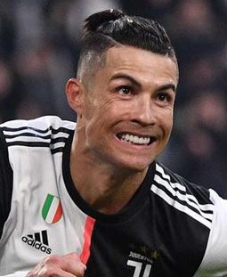

Cristiano Ronaldo dos Santos Aveiro (Funchal, Madeira; 5 de febrero de 1985) es un futbolista portugués. Juega como extremo izquierdo o delantero y su equipo actual es el Al-Nassr F. C. de la Liga Profesional Saudí.19 Es internacional absoluto con la selección de Portugal, de la cual es capitán, máximo goleador histórico y jugador con más presencias con 212 partidos, logro alcanzado en las eliminatorias para la Eurocopa 2024, reconocido por el Libro Guinness de los récords.20
Considerado con frecuencia el mejor y más completo futbolista,21 así como el mayor goleador del mundo,22 además de uno de los mejores de todos los tiempos;n 323 es uno de los futbolistas más laureados de la historia, habiendo ganado, entre otras distinciones, cinco veces el Balón de Oro, cinco premios de la FIFA al mejor jugador del mundo y cuatro Botas de Oro. Ganador del Premio The Best FIFA de 2016 y Premio The Best FIFA de 2016.2425 En 2020, tuvo el honor de ser elegido el mejor Jugador del Siglo xxi en la gala de los Globe Soccer Awards,2627 convirtiéndose en el primer futbolista europeo y el primer portugués en recibirlo, además de ser incluido en el Dream Team del Balón de Oro.28Fue ganador del premio Premio Puskás.29